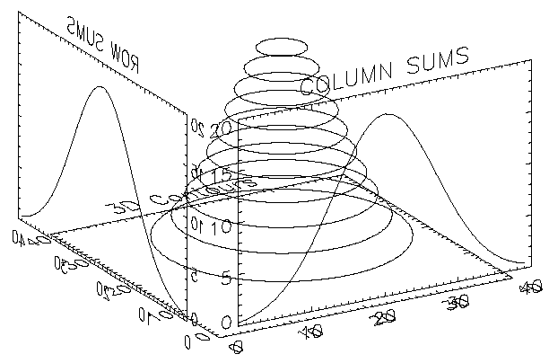

The SCALE3 procedure sets up transformation and scaling parameters for basic 3-D viewing. This procedure is similar to SURFR and SCALE3D, except that the data ranges must be specified and the scaling does not vary with rotation. Results are stored in the system variables !P.T, !X.S, !Y.S, and !Z.S.
This routine is written in the IDL language. Its source code can be found in the file scale3.pro in the lib subdirectory of the IDL distribution.
SCALE3 [, XRANGE = vector ] [, YRANGE = vector ] [, ZRANGE = vector ] [, AX = degrees ] [, AZ = degrees ]
None.
A two-element vector containing the minimum and maximum X values. If omitted, the X-axis scaling remains unchanged.
A two-element vector containing the minimum and maximum Y values. If omitted, the Y-axis scaling remains unchanged.
A two-element vector containing the minimum and maximum Z values. If omitted, the Z-axis scaling remains unchanged.
Angle of rotation about the X axis. The default is 30 degrees.
Angle of rotation about the Z axis. The default is 30 degrees.
Set up a 3-D transformation where the data range is 0 to 20 for each of the 3 axes and the viewing area is rotated 20 degrees about the X axis and 55 degrees about the Z axis:
SCALE3, XRANGE=[0, 20], YRANGE=[0, 20], ZRANGE=[0, 20], AX=20, AZ=55
The figure below illustrates the application of three-dimensional transforms to the output of CONTOUR and PLOT. Using the two-dimensional Gaussian array z defined in Surface of a Gaussian Function , it draws a three-dimensional contour plot with the contours stacked above the axes in the z direction. It then plots the sum of the columns, also a Gaussian, in the xz -plane, and the sum of the rows in the yz plane.
|
 |
It was constructed as follows:
First, the SCALE3 procedure is called to establish the default three- to two-dimensional transformation used by SURFACE, as explained in Transformation Created by SURFACE . The default rotations are 30 degrees about both the x - and z -axes.
Next, a vector, POS, defining the cube containing the plot window is defined in normalized coordinates. The cube extends from 0.1 to 1.0 in the x and y directions and from 0 to 1 in the z direction. Each call to CONTOUR and PLOT must explicitly specify this window to align the plots. This is necessary because the default margins around the plot window are different in each direction.
CONTOUR is called to draw the stacked contours with the axes at z = 0. Clipping is disabled to allow drawing outside the default plot window, which is only two-dimensional.
The procedure T3D is called to exchange the y - and z -axes. The original xyz coordinate system is now xzy .
PLOT is called to draw the column sums which appear in front of the contour plot. The expression Z#REPLICATE(1., N y ) creates a row vector containing the sum of each row in the two-dimensional array z . The NOERASE and NOCLIP keywords are specified to prevent erasure and clipping. This plot appears in the xz -plane because of the previous axis exchange.
T3D is called again to exchange the x - and z -axes. This makes the original xyz coordinate system, which was converted to xzy , now correspond to yzx .
PLOT is called to produce the column sums in the yz -plane in the same manner as the first plot. The original x -axis is drawn in the y -plane, and the y -axis is in the z -plane. One unavoidable side effect of this method is that the annotation of this plot is backwards. If the plot is transformed so the letters read correctly, the x -axis of the plot would be reversed in relation to the y -axis of the contour plot.
The IDL code used to draw the figure is as follows:
; Create the Z variable:
Z = SHIFT(DIST(40), 20, 20)
Z = EXP(-(Z/10)^2)
; NX and NY are the X and Y dimensions of the Z array:
NX = (SIZE(Z))(1)
NY = (SIZE(Z))(2)
; Set up !P.T with default SURFACE transformation.
SCALE3
; Define the three-dimensional plot
; window: x = 0.1 to 1, Y=0.1 to 1, and z = 0 to 1.
POS=[.1, .1, 1, 1, 0, 1]
; Make the stacked contours. Use 10 contour levels.
CONTOUR, Z, /T3D, NLEVELS=10, /NOCLIP, POSIT=POS, CHARSIZE=2
; Swap y and z axes. The original xyz system is now xzy:
T3D, /YZEXCH
; Plot the column sums in front of the contour plot:
PLOT, Z#REPLICATE(1., NY), /NOERASE, /NOCLIP, /T3D, $
TITLE='COLUMN SUMS', POSITION = POS, CHARSIZE = 2
; Swap x and z—original xyz is now yzx:
T3D, /XZEXCH
; Plot the row sums along the right side of the contour plot:
PLOT, REPLICATE(1., NX)#Z, /NOERASE, /T3D, /NOCLIP, $
TITLE = 'ROW SUMS', POSITION = POS, CHARSIZE = 2
Example Code:
To execute this example, run the batch file
cntour06
with the following command at the IDL prompt:
@cntour06
|
Pre-4.0 |
Introduced |
SCALE3D Procedure , SURFACE Procedure , SURFR Procedure , T3D Procedure